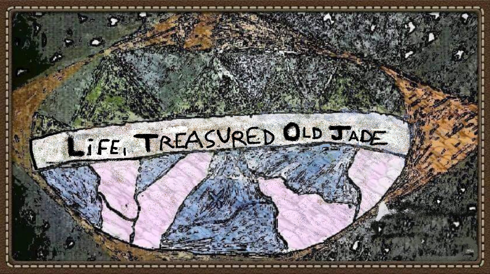

Lifetoja - Desenvolvimento Humano, Social, Biológico e Tecnologico
A Lifetoja é uma marca de natureza contínua, que transcende momentos específicos de sua trajetória institucional. Independentemente de seu estágio — em formação, expansão, reestruturação ou mesmo em silêncio — sua essência permanece ativa e em desenvolvimento.
Trata-se de uma iniciativa que se autoconstrói de forma lenta, orgânica e espontânea, conforme pessoas com ideais semelhantes se conectam, agem e influenciam o mundo ao seu redor — muitas vezes sem sequer se conhecerem ou perceberem que fazem parte de um mesmo movimento.
Em diferentes partes do planeta, há indivíduos guiados por uma aspiração comum: a melhoria genuína da experiência humana. A Lifetoja insere-se nesse contexto como uma peça complementar no vasto e dinâmico quebra-cabeça do aperfeiçoamento da vida. Sua função é otimizar, apoiar e catalisar esse processo que já ocorre naturalmente, servindo como ponto de convergência e fortalecimento de esforços dispersos, porém sinérgicos.
Não se trata de um empreendimento convencional, nem de um projeto com início e fim definidos. A Lifetoja é expressão de um fenômeno coletivo, composto por ações humanas orientadas ao bem comum. É, portanto, um reflexo de um movimento silencioso, global e perene, que visa elevar a qualidade de vida da humanidade de forma ética, sustentável e consciente.
Esse processo é, por natureza, gradual. Avança de geração em geração, com persistência e profundidade, promovendo um autoaperfeiçoamento contínuo. A Lifetoja é apenas uma das inúmeras manifestações dessa força discreta, mas inabalável, que acompanha a história da civilização e continuará presente em seu futuro.
